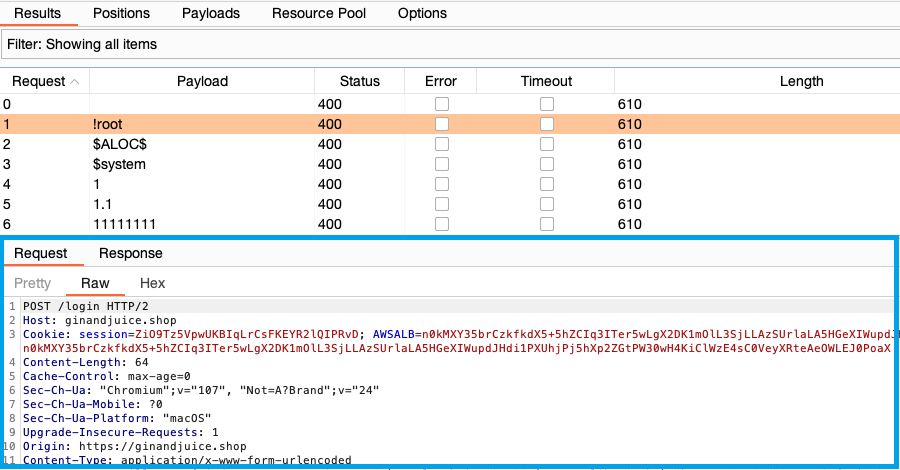

攻撃結果の表示
攻撃で発行されたすべてのリクエストとレスポンスの詳細を結果ウィンドウで確認できます。結果は、結果タブに一覧で表示されます。
結果一覧を設定するには、列メニューをクリックし、列の選択、非選択を切り替えます。次のオプションがあります:
-
リクエスト - リクエストのインデックス番号。攻撃で元のリクエストをそのまま送るような設定がされていたら、番号0のアイテムとして一覧内に表示されます。
-
ポジション - 現在のペイロードのポジション番号(スナイパー攻撃の場合)。
-
ペイロード - リクエストで使われたペイロード。
-
ステータス - HTTPステータスコード。
-
時刻 - リクエストが行われた時刻。
-
レスポンス受信 - レスポンスを受信し始めるまでの所要時間(ミリ秒単位)。
-
レスポンス完了 - レスポンスを受信し終わるまでの所要時間(ミリ秒単位)。
-
エラー - リクエスト送信中にエラーが発生したかどうか。
-
タイムアウト - レスポンスや処理を待っている間にタイムアウトが発生したかどうか。
-
長さ - レスポンスの長さ(バイト)。
-
Cookie - レスポンスで受信したcookie。
-
コメント - ユーザが適用したコメント。
また、適切なオプションが設定されている場合は、次の詳細が表示されます:
-
マッチgrepアイテムの結果。
-
抽出grepアイテムで抽出されたデータ。
-
payload grepが設定されている場合、ペイロードがレスポンス内に返ってきたかどうか。
-
たどったリダイレクト - たどったリダイレクトの数。
リクエストの表示
一覧で任意のアイテムを選択すると、リクエストとレスポンスが表示されます。

リダイレクトをたどるように攻撃設定がされている場合は、Burpは途中のすべてのリクエストも表示します。
アイテムをダブルクリックすると、リクエストとレスポンスが新しいウィンドウで表示されます。
関連ページ
Burp Intruderには、結果を分析するためのさまざまな機能があります。詳細は、攻撃結果の分析を参照してください。